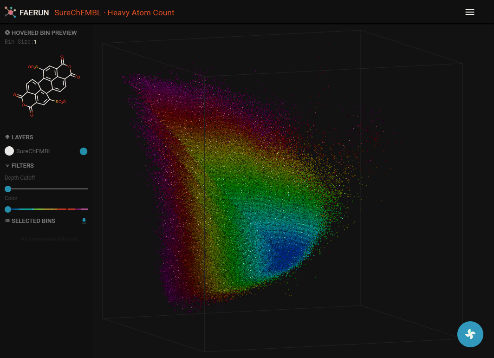
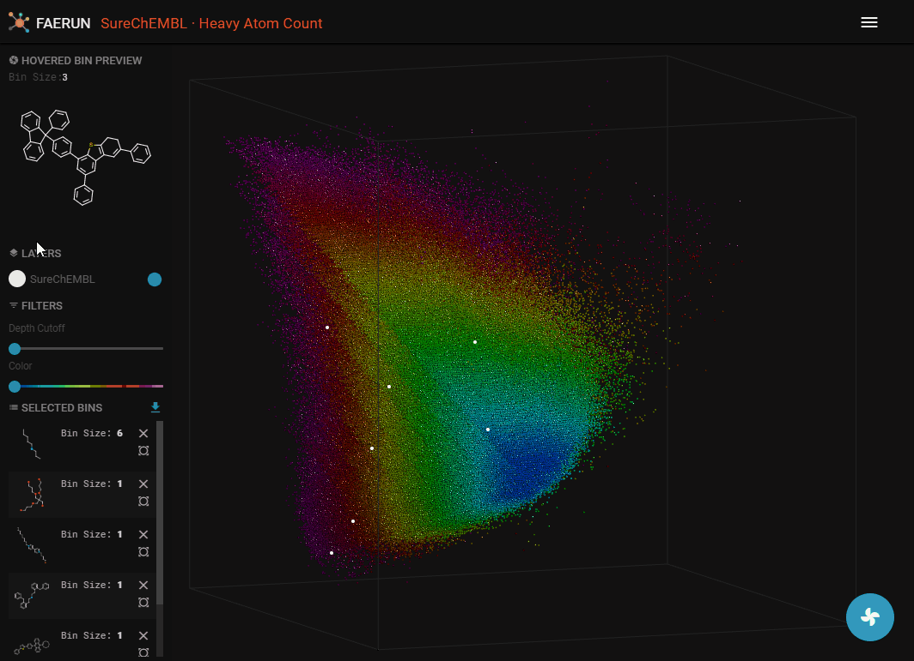
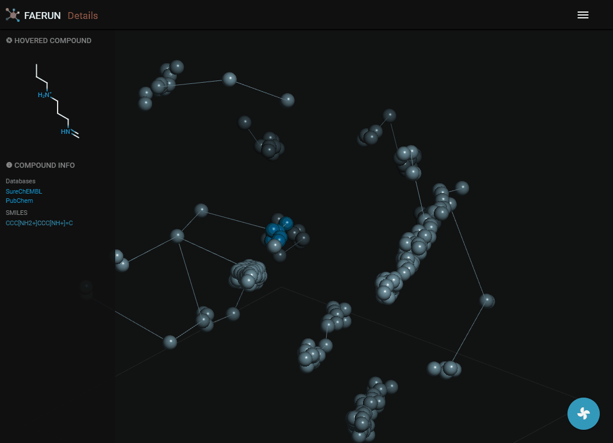
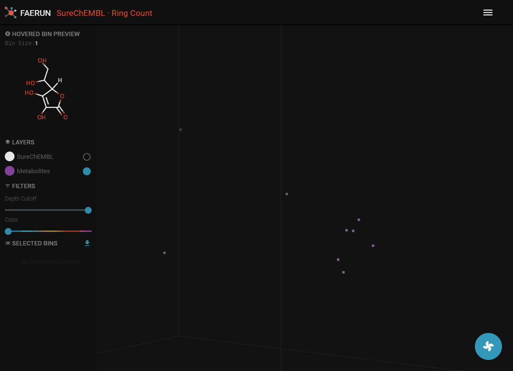

FAERUN Tutorial
Contents
Loading Data

- Select a database.
- Select a (molecular) fingerprint.
- Select a variant. Each variant is the product of a PCA dimensionality reduction from original fingerprint space to 3D. After projection, the data was digitized into two different resolutions: low (250 x 250 x 250) and high (500 x 500 x 500).
- After this step, the positional data is loaded (all data points have the same colour.
- It's strongly suggested that you now also select a map, colour coding the loaded data. The colour gradient (dark blue to magenta) always equals low to high.
- You can now select data points by double clicking them.
Filtering Data

- Data filtering allows to explore the inside of the point cloud.
- Data can be filtered by using Depth Cutoff. Setting a minimum depth from the camera, thus slicing the point cloud.
- Data can alos be filtered by Color.
Details (1)

- A data point (or bin) can be selected by double clicking it. Once selected, it appears in the selected bins list in the HUD.
- A selected item has three functions. Clicking the 'x' button removes the bin from the selected list. Clicking the button below the 'x' button centers the view on this bin. Clicking the item anywhere else, opens the detail view in a new browser tab.
- The details view loads the content of a bin, or if the bin has less than 10 compounds, the content of the bin and the 26 surrounding bins.
- Data points representing compounds are connected by the minimum spanning tree.
- Data points contained within the selected bin are strongly saturated (colourful) while those selected from surrounding bins have muted colours.
Details (2)

- Compounds within a bin (or cluster of bins) can also be explored by displaying them as a list.
- The button "Download As CSV" downloads a CSV containing the displayed data.
Loading (Projecting) a Custom Set of Molecules

- A custom set of molecules can be projected to the currently loaded space by clicking "Project" in the main menu.
- Choose a color for the projected data points.
- Choose a name for the set.
- Enter (or paste) a set of SMILES strings in the textarea, separated by new lines and click "PROJECT".
- The (currently selected) fingerprint is computed for the entered molecules.
- The PCA model (matrices) associated with each fingerprint is (are) stored and applied to the calculated fingerprints.
- The projected points are probably hidden by the original data. Since the two filter sliders are always associated with the main data layer (SureChEMBL), they can be used to bring the newly projected data within view.
KNN Search

- Once a custom projection is loaded, make sure it is selected in the LAYERS list and all filters are off.
- In the main menu, click "KNN SEARCH".
- Choose a number of nearest neighbours (k) to serach for (for each projected compound).
- This step might take up to a couple of minutes, depending on the amount of projected compounds, the parameter k and the speed of your computer.
- Once the KNN search has finished, select SureChEMBL again in order to be able to select data points from this set (or layer).